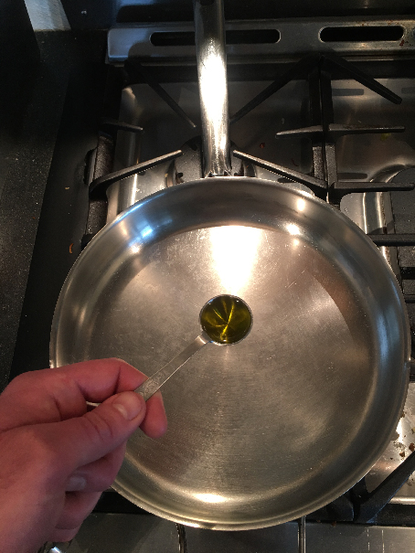
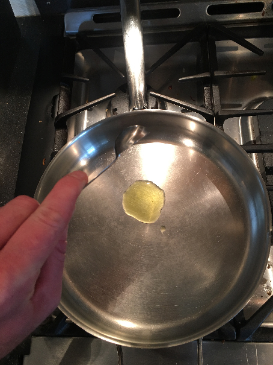
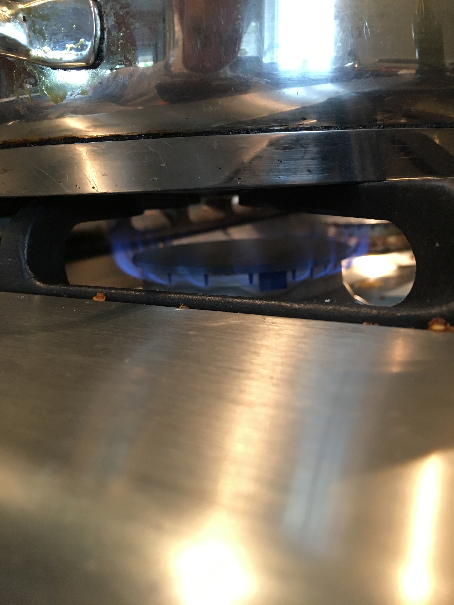
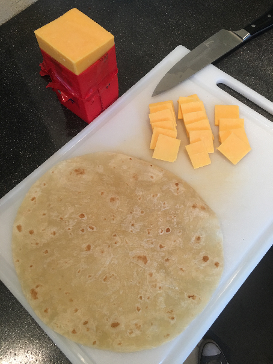
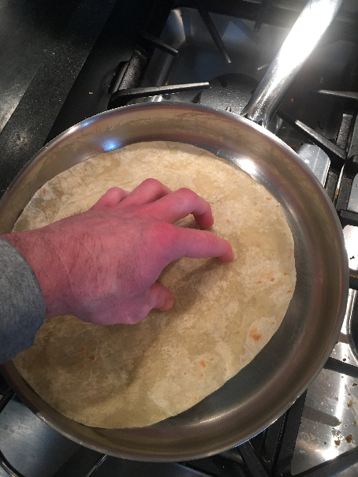
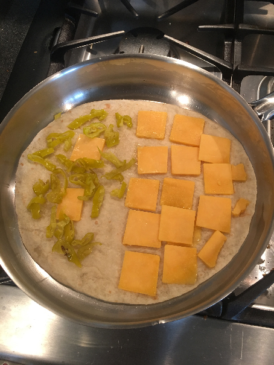
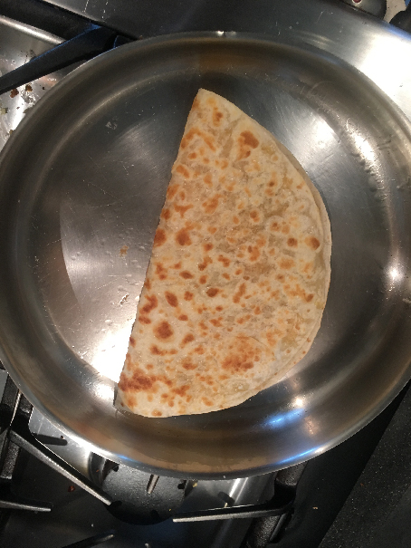
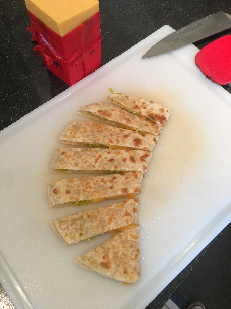

Instructable: Cheese Quesadilla
-
Get your ingredients:
- Tortilla
- Cheese
- Olive Oil
- Anything else you like
- Add a single teaspoon of oil to your pan.


-
Let your pan (with oil) heat up for three minutes on medium heat.

-
While the oil is heating up in the pan, cut the cheese into little
slabs:

-
Once the oil has been heated up, add the tortilla to the pan, rotating
it so that the oil is coating its underside evenly.

- Add the slabs of cheese to half of the tortilla.

- Add the other ingredients as you see fit.
-
After about three to five minutes, after the cheese has melted, fold
the quesadilla in half.

- Remove the quesadilla from the pan and serve.
